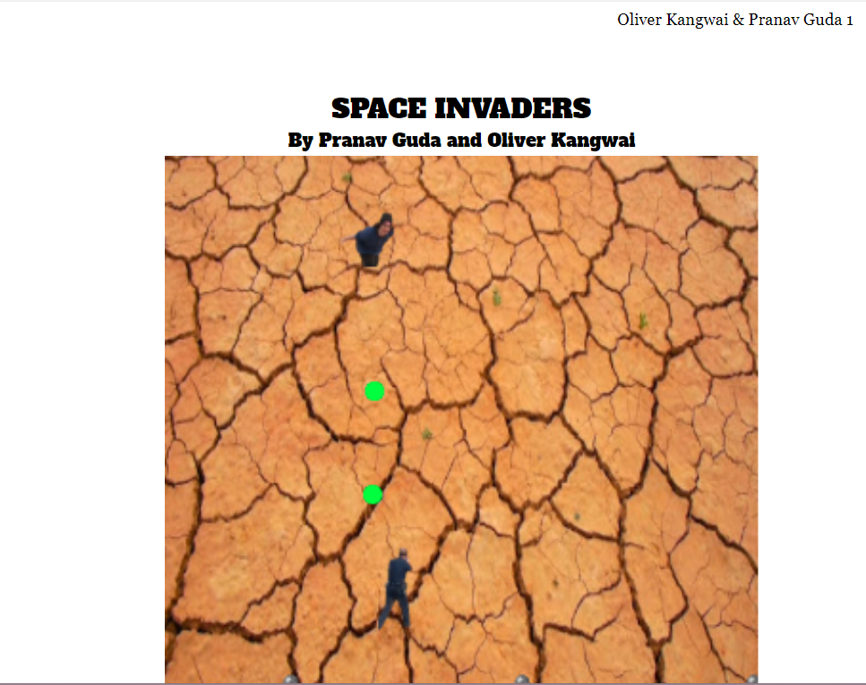

This project was done in CSP and was finished in September of 2019
In this project I was keeping up with most of the code but was also touching up on my project log when my teammate couldn't. In this project I learned how to fluently code in scratch and I learned hw important time is to a project. My teammate and I exemplified teamwork by splitting the project up into sections and would conjoin them once finished.

 MIT App Inventor Project
This project was done in CSP during September and October of 2019
In this project I was mainly maintaining documents and coding the sprites in. I created all of the sprites in the game and put them in the code adjusting the size and width to make sure all the other parts of the game would work. I tested the code my teammate did and was in charge of identifying the errors and trying to come up with a solution for these ideas. In this project I learned how to code in MIT App Inventor and learned how to fix a game's small errors to make the game run as smoothly as possible. My teammate and I exemplified teamwork by being able t check eachother's work to see what could be fixed and what was good.
HTML Project
This project was done in CSP during September and October of 2019
In this project which you are currently on I made a website that encompases what I have done so far in my CSP class. I coded everything and customized everything to my personal wants. This project was not a partner project like the others so I was the only one doing anything on it. In this project I learned how to find how to do something very quickly through all the road bumps in code I had doing this project.